Rasterizing single-color triangles
Starting from the minimum x and y input triangle points to the
maximum x and y input triangle points, I sampled each point at the
center of each pixel within these bounds, checking whether or not
the point was in the triangle or not. If it was, I filled in the
pixel with the input color.
I computed the line equation between some input triangle point
P
i and some other input triangle point
P
i+1, given by the following equation:
Li(x, y) = -(x - xi)(yi+1 -
yi) + (y - yi)(xi+1 -
xi)
where x and y are the x and y coordinates of the sampled point.
This equation is the dot product of V and N, where V is the line
tangent vector between P
i and the sampled point, and
N is P
i’s normal vector.
If Li(x, y) >= 0 for all i in either clockwise or
counterclockwise order, the sampled point is considered inside
or on the edge of the triangle and is thus filled in with the
input color.
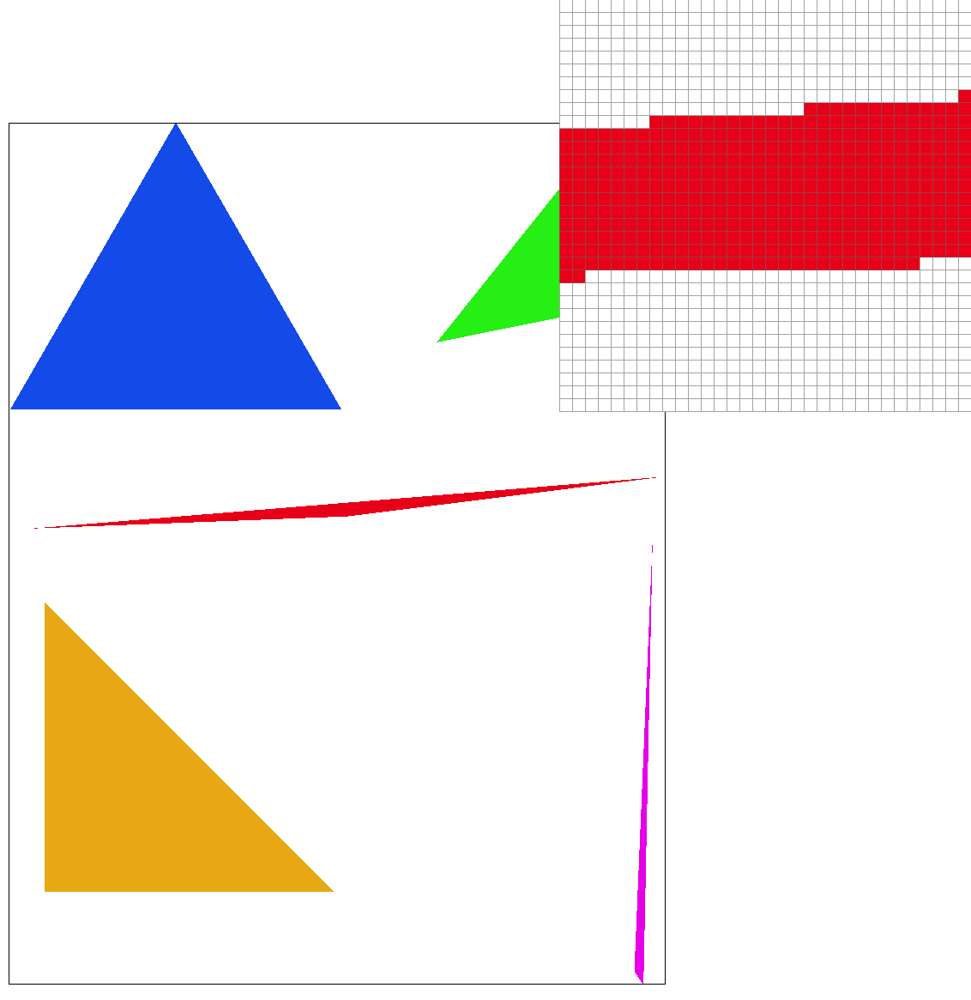
Antialiasing triangles
Supersampling
Supersampling is an anti-aliasing method done by sampling multiple
locations within a pixel and averaging their values. Averaged color
values contribute to smoother transitions along edges, reducing the
appearance of jaggedness/pixelization (also known as “jaggies”).
Populating the Supersample Buffer
In my implementation of this method, I start by rasterizing a high
resolution image to a supersample buffer, represented as a color
vector that stores the rgb values of multiple subpixels within a
pixel; the number of subpixels sampled per pixel is determined by
the sample rate. The values stored in each subpixel is either an
input color if the sampled subpixel is in the triangle, and the
color white if it is not in the triangle.
I initialized all values in the supersample buffer to the color
white. Then, for every pixel within the bounds of the desired
triangle’s min and max points, I sampled each subpixel, checking
whether it was in the triangle or not. If the subpixel was in the
triangle, I changed the value at its corresponding supersample
buffer coordinate to be the input color.
Downsampling
Once the supersample buffer was filled, the image needed to be
downsampled to populate correct average values of the framebuffer. For
every pixel within the bounds of the triangle’s min and max points, I
computed the average color values of each one of its subpixels.
Comparisons
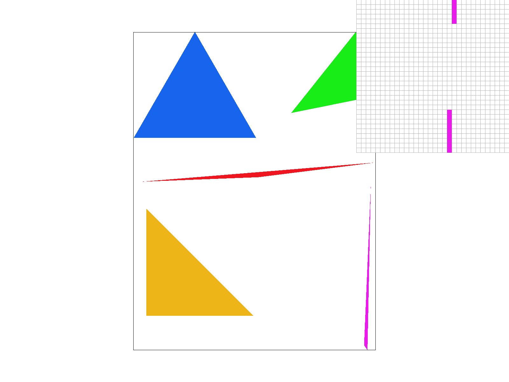
Sample rate of 1 per pixel
Sample rate of 4 per pixel
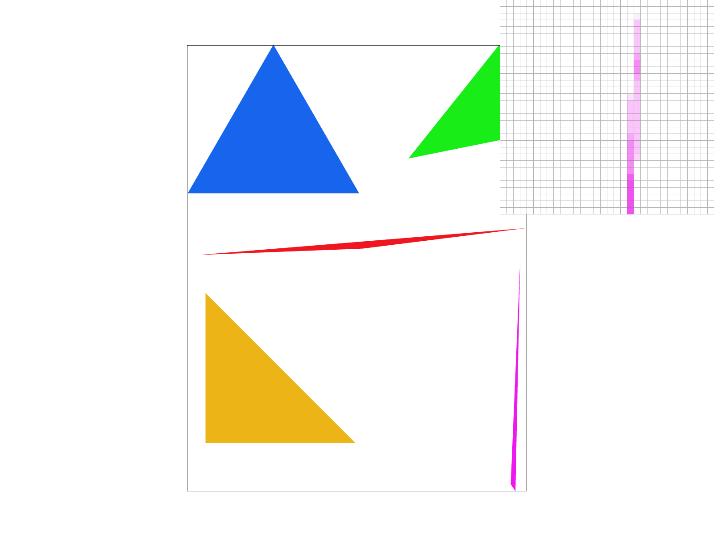
Sample rate of 16 per pixel
Barycentric coordinates
Barycentric Coordinates
Barycentric Coordinates are a triangle coordinate system used to
obtain smoothly varying values across a surface. These values are
calculated through linear interpolation of values at the vertices of
the triangle (which may denote position, color, texture coordinates,
etc).
Implementation
In the following image, V
A, V
B and V
C
hold a red, green, and blue color values, respectively.
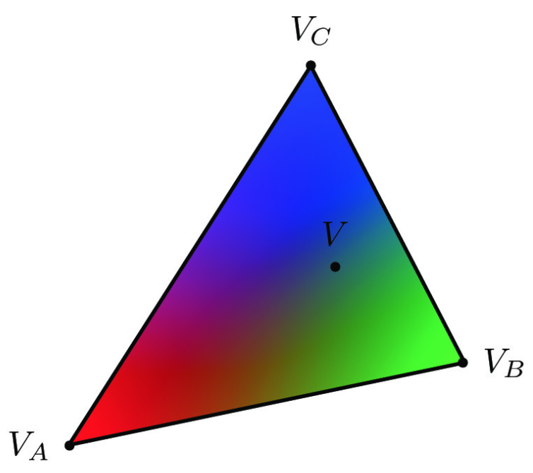
I found the colors at all points V by first calculating the alpha,
beta, and lambda “weights,” where each scalar weights correspond to
one vertex of the triangle. I then calculated the red, green, and
blue values, which is equivalent to the sum of each of the color
values of each vertex multiplied by its corresponding weight
(i.e. V.red = VA.red * alpha + VB.red * beta +
VC.red * lambda).
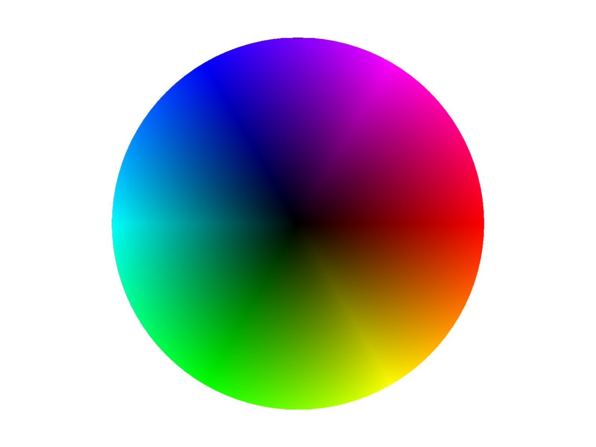
Pixel sampling for texture mapping
Pixel Sampling
When a texture is mapped to a triangle mesh, each (x, y) pixel
location of the triangle is mapped to the corresponding "texel"
location within the (u, v) coordinates of our texture image. To find
the corresponding values, we use Barycentric Coordinates.
Implementation
Barycentric coordinates are implemented the same way as previously
done, except now, the values being evaluated are pixel locations
rather than rgb color values. Once the corresponding (u, v) values are
calculated, we can choose to use either Nearest pixel sampling or
Bilinear pixel sampling. Nearest pixel sampling simply samples the
closest texel to the sampled point. Bilinear pixel sampling
interpolates between the 4 nearest texels.
Examples
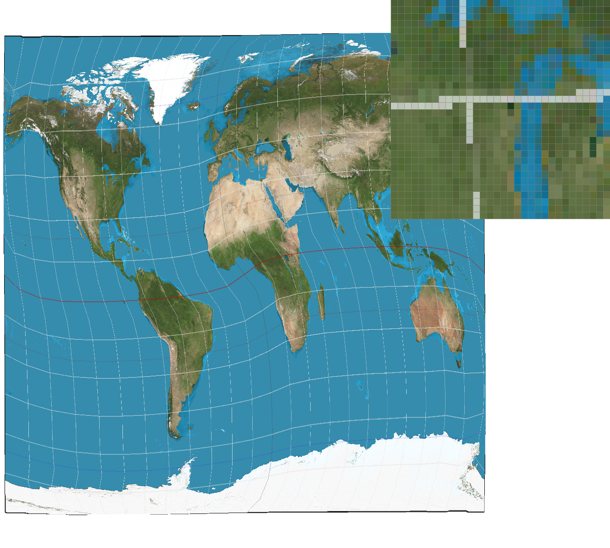
Nearest sampling at sample rate 1
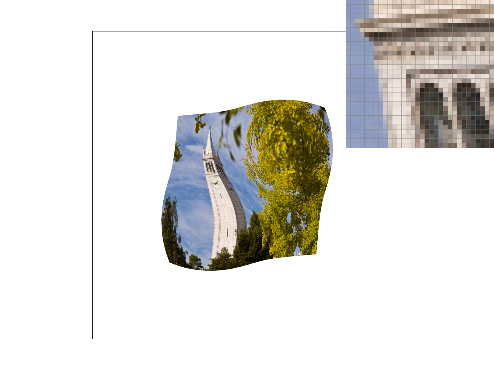
Nearest sampling at sample rate 16
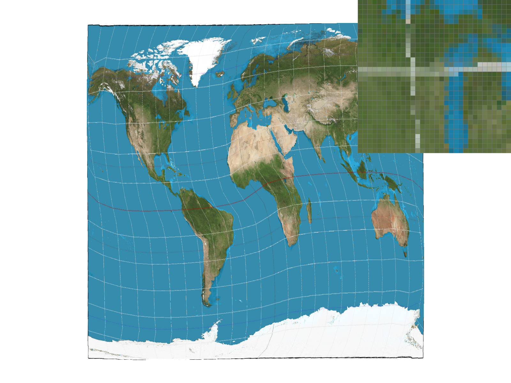
Bilinear sampling at sample rate 1
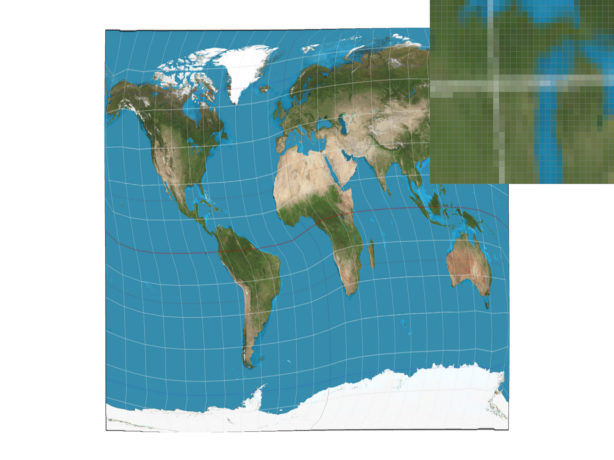
Bilinear sampling at sample rate 16
At a sample rate of 1, bilinear sampling produces a better image;
because this method involves averaging 4 of the nearest texels, it’s
able to capture more data about the original texture image, even if
the texture has a higher frequency than the sample rate. Nearest
sampling, on the other hand, may miss fine details that bilinear
sampling would be able to preserve. At a sample rate of 16, there is
less of a difference between the two sampling methods; because the
frequency of the texture image is now closer to the sampling rate,
less fine details may be missed using either method.
Level sampling with mipmaps for texture mapping
Level Sampling
In the case where areas of our triangle mesh are at different depths
in 3D space, we can apply level sampling to adjust the resolution
depending on depth levels, where areas far away are downsampled and
rendered at low resolutions and areas that are up close are rendered
at higher resolutions. Application of level sampling can save
computation time and filter minification.
Types of Level Sampling
Zero: sample all points at a depth level of 0
Nearest: compute
the nearest integer level
Linear: compute a weighted sum of
levels
Implementation
I calculated the distance between the sampled point and its adjacent
points; larger distances indicate that the sampled area is farther
away, and is at a higher depth level.
I start by computing:
-
the Barycentric Coordinates of (x, y), (x + 1, y), and (x, y + 1)
-
the (u, v) texel coordinates for each point, using the Barycentric
Coordinates
- (du/dx), (dv/dx), (du/dy), and (dv/dy)
Then, I applied these values to the following equations:
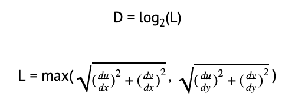
From here, I can sample the texture map at the appropropriate depth
level.
Comparisons
Supersampling has slower computation speed, increased memory
usage, and greater anti-aliasing power.
Bilinear sampling
compared to nearest sampling has slower computation speed, increased
memory usage, and greater anti-aliasing power
Level sampling results in higher computation speed,
increased memory usage, and greater anti-aliasing power.
Examples
Level Zero with Nearest sampling
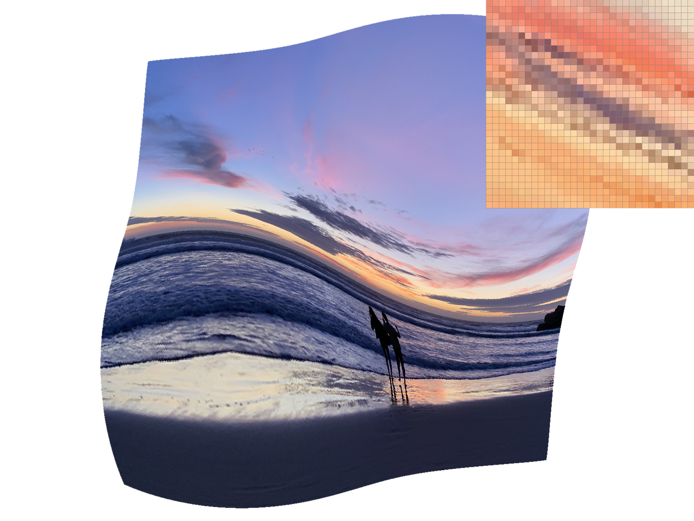
Level Zero with Bilinear sampling
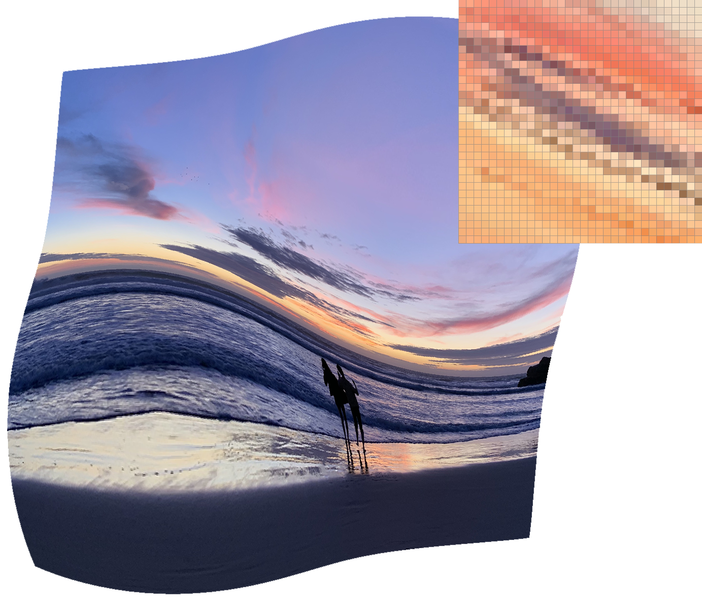
Nearest Level with Nearest sampling
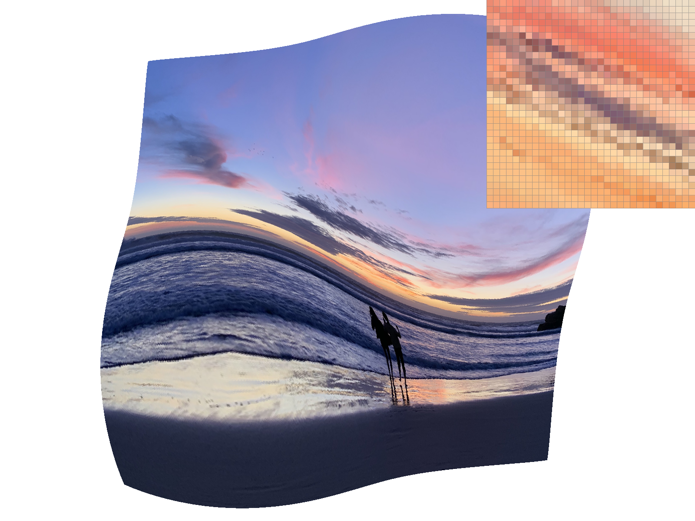
Nearest Level with Bilinear sampling